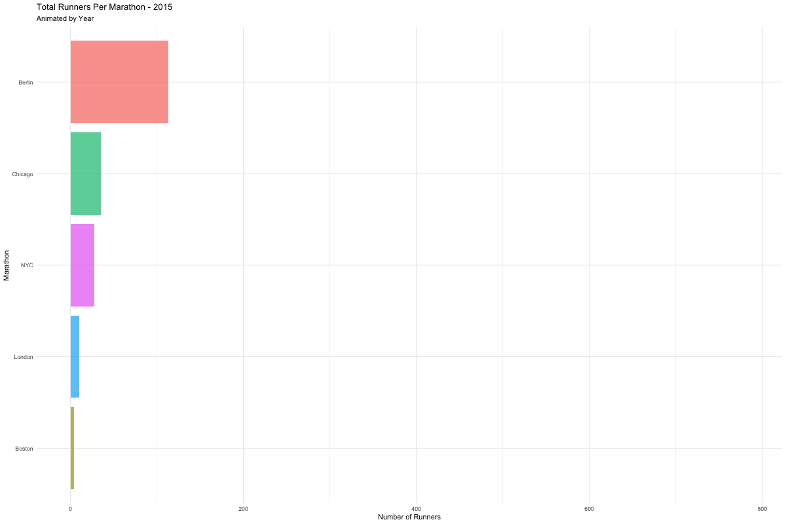
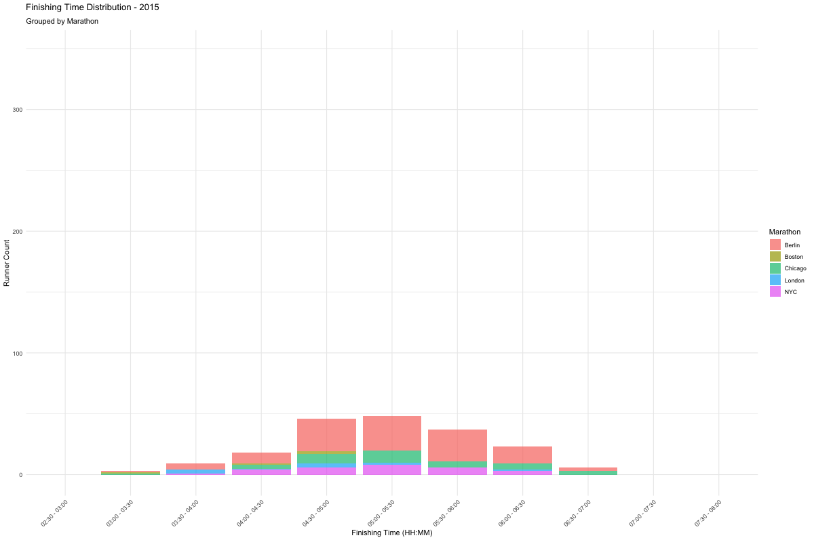

This project explores the participation and performance of Indonesian runners in the World Marathon Majors (excluding Tokyo) from 2015 to 2024. It analyzes growth trends, fastest times, and participation patterns across major marathons, with interactive visualizations showing runner distribution and performance over time.
